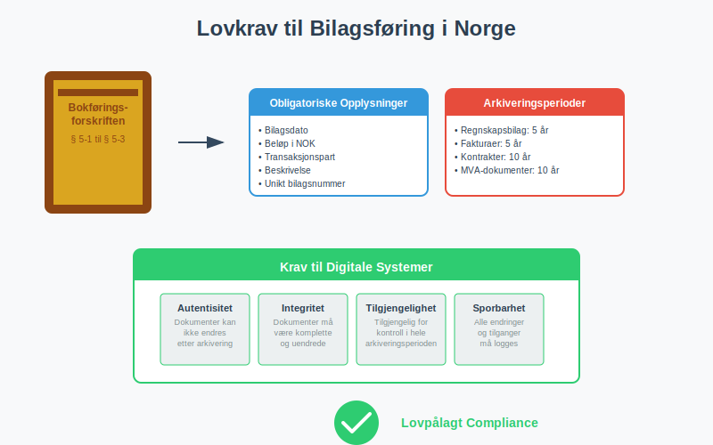
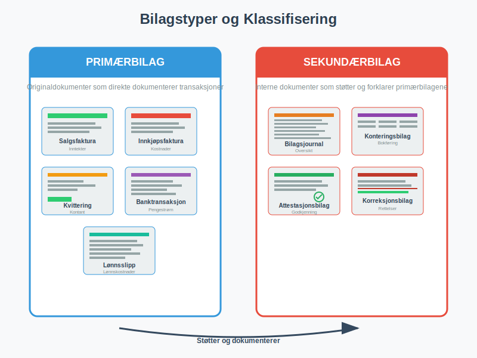
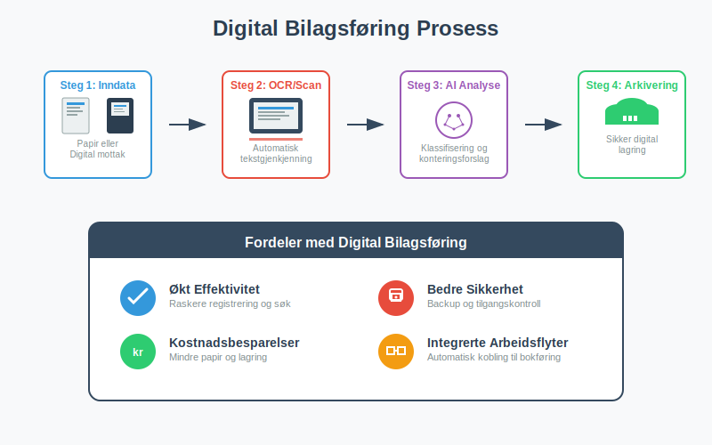
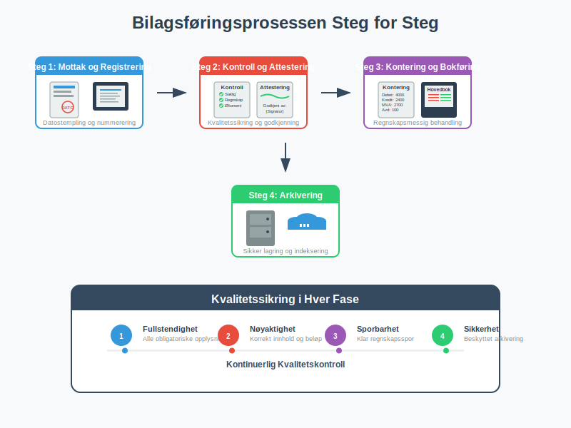
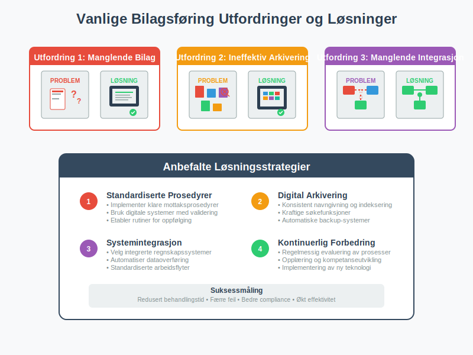

Bilagsføring er den systematiske prosessen med å registrere, organisere og arkivere alle regnskapsdokumenter som danner grunnlaget for bokføring. Dette omfatter alt fra fakturaer og kvitteringer til arbeidskontrakter og banktransaksjoner. Korrekt bilagsføring er ikke bare et lovkrav, men også fundamentet for pålitelig regnskapsføring og effektiv attestering av forretningsdokumenter.
(For en generell oversikt over bilag i regnskap, se Bilag.)
Som en sentral del av den totale dokumentasjonen i regnskap og bokføring, sikrer bilagsføring sporbarhet og etterprøvbarhet av alle økonomiske transaksjoner.
I Norge reguleres bilagsføring av bokføringsforskriften, som stiller strenge krav til dokumentasjon og arkivering. Moderne bedrifter benytter i økende grad digitale løsninger for å effektivisere bilagsbehandlingen, men grunnprinsippene for korrekt dokumentasjon forblir de samme.
Lovkrav til Bilagsføring i Norge
Bokføringsforskriften § 5-1 til § 5-3 definerer klare krav til hvordan bilag skal behandles og arkiveres. Disse kravene sikrer at regnskapet kan etterprøves og at bedriften kan dokumentere alle transaksjoner overfor skattemyndighetene.

Grunnleggende Dokumentasjonskrav
Alle regnskapsbilag må inneholde følgende obligatoriske opplysninger:
- Bilagsdato: Når transaksjonen fant sted
- Beløp: Transaksjonens verdi i norske kroner
- Transaksjonspart: Hvem bedriften handlet med
- Beskrivelse: Hva transaksjonen gjaldt
- Bilagsnummer: Unikt identifikasjonsnummer for sporbarhet
Arkiveringsperioder
Ulike typer bilag har forskjellige arkiveringsperioder som må overholdes:
| Bilagstype | Arkiveringsperiode | Lovgrunnlag |
|---|---|---|
| Regnskapsbilag | 5 år | Bokføringsforskriften § 13-2 |
| Fakturaer og kvitteringer | 5 år | Bokføringsforskriften § 13-2 |
| Kontrakter og avtaler | 10 år | Bokføringsforskriften § 13-3 |
| Lønnsbilag | 5 år | Bokføringsforskriften § 13-2 |
| MVA-dokumenter | 10 år | Merverdiavgiftsloven § 21-3 |
Bilagstyper og Klassifisering
Effektiv bilagsføring krever systematisk klassifisering av ulike dokumenttyper. Dette letter både daglig arbeid og fremtidig gjenfinning av dokumenter.

Primærbilag
Primærbilag er originaldokumenter som direkte dokumenterer en forretningstransaksjon:
- Salgsfakturaer: Dokumenterer inntekter fra kunder
- Innkjøpsfakturaer: Dokumenterer kostnader fra leverandører
- Kvitteringer: Bevis for kontantbetalinger
- Banktransaksjoner: Dokumenterer pengestrømmer
- Lønnsslipp: Dokumenterer lønnskostnader
Sekundærbilag
Sekundærbilag er interne dokumenter som støtter og forklarer primærbilagene:
- Bilagsjournal: Oversikt over alle registrerte bilag
- Konteringsbilag: Spesifiserer hvordan transaksjoner skal bokføres
- Attestasjonsbilag: Dokumenterer godkjenning av transaksjoner
- Korreksjonsbilag: Retter feil i tidligere registreringer
Digital Bilagsføring og Moderne Løsninger
Digitalisering har revolusjonert bilagsføring, og mange bedrifter har gått over til papirløse løsninger. Dette krever imidlertid at digitale systemer oppfyller samme kvalitetskrav som tradisjonell papirbasert arkivering.

Krav til Digitale Systemer
For at digitale bilagssystemer skal være lovlige, må de oppfylle følgende krav:
- Autentisitet: Systemet må sikre at dokumenter ikke kan endres etter arkivering
- Integritet: Dokumenter må være komplette og uendrede
- Tilgjengelighet: Dokumenter må være tilgjengelige for kontroll i hele arkiveringsperioden
- Sporbarhet: Alle endringer og tilganger må logges
Fordeler med Digital Bilagsføring
Digital bilagsføring gir betydelige fordeler sammenlignet med tradisjonelle papirbaserte systemer:
- Økt effektivitet: Raskere registrering og søk i dokumenter
- Bedre sikkerhet: Automatisk backup og tilgangskontroll
- Kostnadsbesparelser: Reduserte kostnader til papir, lagring og håndtering
- Miljøvennlig: Mindre papirforbruk og fysisk lagringsbehov
- Integrerte arbeidsflyter: Automatisk kobling til attestering og bokføring
Bilagsføringsprosessen Steg for Steg
En systematisk tilnærming til bilagsføring sikrer at ingen dokumenter går tapt og at alle transaksjoner blir korrekt registrert.

Steg 1: Mottak og Registrering
Når et bilag mottas, må det umiddelbart:
- Datostempeles med mottaksdato
- Tildeles et unikt bilagsnummer fra en sammenhengende nummerserie
- Registreres i bilagsjournalen med grunnleggende informasjon
- Kontrolleres for fullstendighet av obligatoriske opplysninger
Steg 2: Kontroll og Attestering
Før et bilag kan bokføres, må det gjennom en grundig kontrollprosess:
- Saklig kontroll: Er varen/tjenesten faktisk mottatt?
- Regnskapsmessig kontroll: Er bilagets innhold korrekt og komplett?
- Økonomisk kontroll: Er kjøpet innenfor budsjett og fullmakter?
- Formell godkjenning: Attestering av autorisert person
Steg 3: Kontering og Bokføring
Etter godkjenning må bilagets regnskapsmessige behandling bestemmes:
- Kontokoding: Hvilke kontoer skal belastes/krediteres?
- MVA-behandling: Korrekt merverdiavgiftshåndtering
- Kostnadssted: Fordeling på avdelinger eller prosjekter
- Periodisering: Riktig regnskapsperiode for transaksjonen
Steg 4: Arkivering
Det siste steget er permanent arkivering av bilagets:
- Fysisk eller digital lagring i henhold til arkiveringsreglene
- Indeksering for enkel gjenfinning
- Sikkerhetskopi for å beskytte mot tap
- Tilgangskontroll for å sikre konfidensialitet
Internkontroll og Kvalitetssikring
Effektiv bilagsføring krever robuste internkontrollsystemer som sikrer at alle prosedyrer følges konsekvent og at feil oppdages raskt.
Segregering av Oppgaver
For å redusere risiko for feil og misligheter bør følgende oppgaver være adskilt:
- Bilagsmottak og bilagsregistrering
- Attestering og bokføring
- Betalingsutførelse og regnskapsføring
- Arkivering og tilgangskontroll
Regelmessige Kontroller
Systematiske kontroller bør utføres for å sikre kvaliteten på bilagsføringen:
- Månedlige avstemminger mellom bilagsjournal og hovedbok
- Stikkprøvekontroller av bilagskvalitet og fullstendighet
- Årlige gjennomganger av arkiveringsprosedyrer
- Revisjonsklargjøring med dokumentasjon av alle prosesser
Vanlige Utfordringer og Løsninger
Mange bedrifter møter lignende utfordringer i bilagsføringen. Her er de mest vanlige problemene og anbefalte løsninger:

Utfordring 1: Manglende eller Ufullstendige Bilag
Problem: Bilag som mangler obligatoriske opplysninger eller som ikke kan lokaliseres.
Løsning:
- Implementer standardiserte mottaksprosedyrer
- Bruk digitale systemer med automatisk validering
- Etabler rutiner for oppfølging av manglende dokumenter
- Tren personalet i krav til bilagskvalitet
Utfordring 2: Ineffektiv Arkivering
Problem: Vanskelig å finne arkiverte bilag når de trengs.
Løsning:
- Innfør konsistent navngivning og indeksering
- Bruk digitale søkefunksjoner for rask gjenfinning
- Etabler klare arkiveringsrutiner som alle følger
- Implementer backup-systemer for sikkerhet
Utfordring 3: Manglende Integrasjon
Problem: Bilagsføring er ikke integrert med andre regnskapsprosesser.
Løsning:
- Velg integrerte regnskapssystemer som kobler bilagsføring med bokføring
- Automatiser dataoverføring mellom systemer
- Etabler standardiserte arbeidsflyter som sikrer konsistens
- Tren personalet i helhetlig regnskapstenkning
Teknologiske Trender og Fremtiden
Bilagsføring utvikler seg raskt med nye teknologier som kunstig intelligens og maskinlæring. Disse teknologiene lover å automatisere mange manuelle prosesser og redusere feilmarginer betydelig.
Automatisk Tekstgjenkjenning (OCR)
Moderne OCR-teknologi kan automatisk lese og registrere informasjon fra bilag, noe som:
- Reduserer manuelt arbeid ved dataregistrering
- Minimerer feil fra manuell inntasting
- Øker hastigheten på bilagsbehandling
- Forbedrer sporbarhet gjennom digital logging
Kunstig Intelligens i Bilagsbehandling
AI-systemer kan lære å:
- Klassifisere bilag automatisk basert på innhold
- Foreslå kontering basert på historiske data
- Oppdage avvik og potensielle feil
- Optimalisere arbeidsflyter basert på bruksmønstre
Beste Praksis for Effektiv Bilagsføring
Basert på erfaring fra ledende bedrifter, her er de viktigste anbefalingene for å etablere effektiv bilagsføring:
1. Etabler Klare Rutiner
- Dokumenter alle prosesser i skriftlige prosedyrer
- Tren alle ansatte i korrekte rutiner
- Gjennomgå og oppdater prosedyrer regelmessig
- Sikre konsistent implementering på tvers av organisasjonen
2. Invester i Riktige Verktøy
- Velg systemer som passer bedriftens størrelse og behov
- Prioriter integrasjon med eksisterende regnskapssystemer
- Sikre skalerbarhet for fremtidig vekst
- Planlegg for backup og katastrofegjenoppretting
3. Fokuser på Kvalitetskontroll
- Implementer flere kontrollnivåer for kritiske transaksjoner
- Bruk teknologi for automatisk validering
- Etabler feedback-løkker for kontinuerlig forbedring
- Mål og følg opp nøkkelindikatorer for kvalitet
4. Forbered for Fremtiden
- Hold deg oppdatert på teknologiske utviklinger
- Invester i kompetanse og opplæring
- Vurder nye løsninger regelmessig
- Planlegg for endringer i lovkrav og standarder
Korrekt bilagsføring er fundamentet for pålitelig regnskapsføring og effektiv bedriftsstyring. Ved å følge etablerte beste praksis og utnytte moderne teknologi kan bedrifter sikre både lovmessighet og operasjonell effektivitet i sin regnskapsføring.